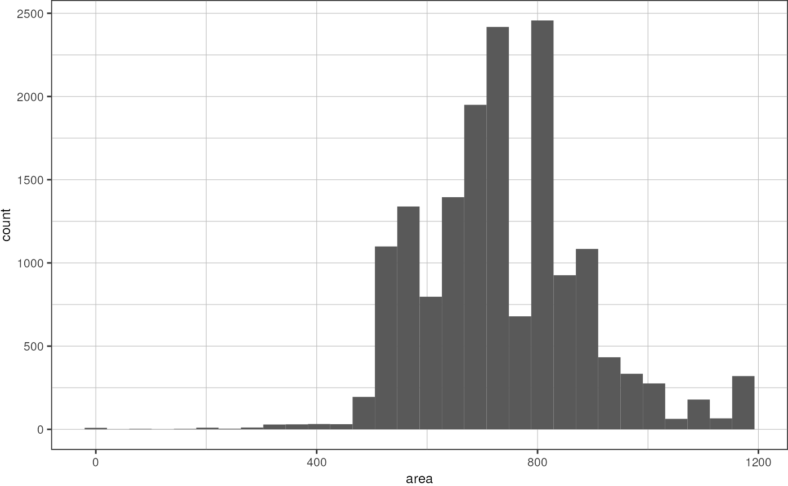
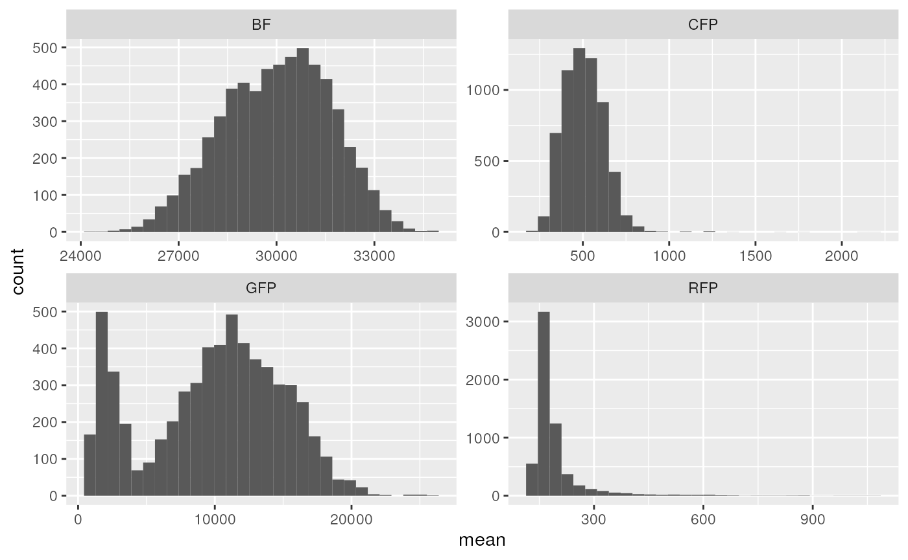
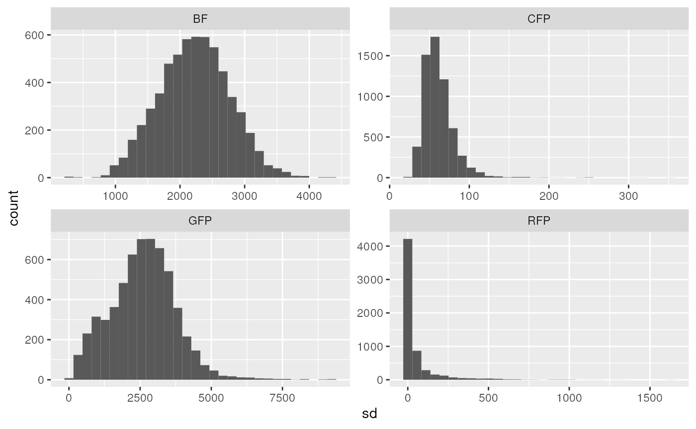
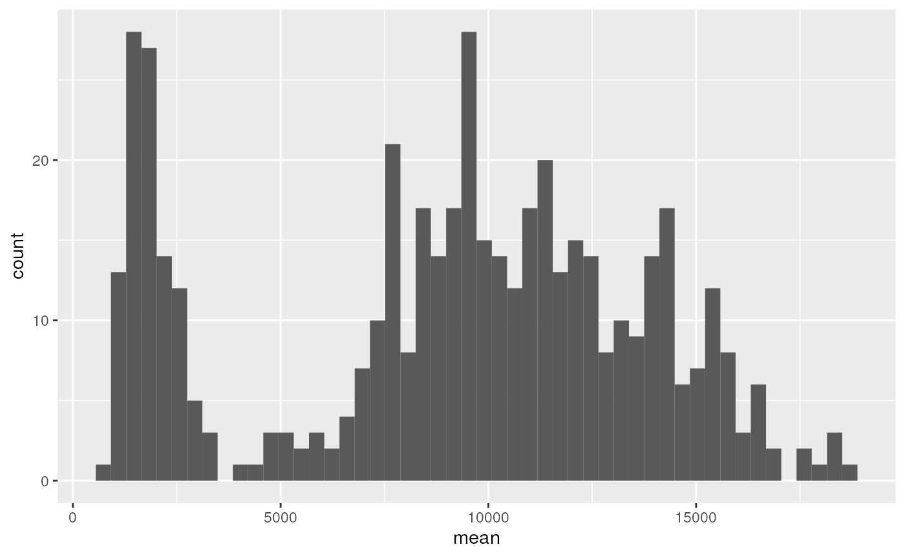
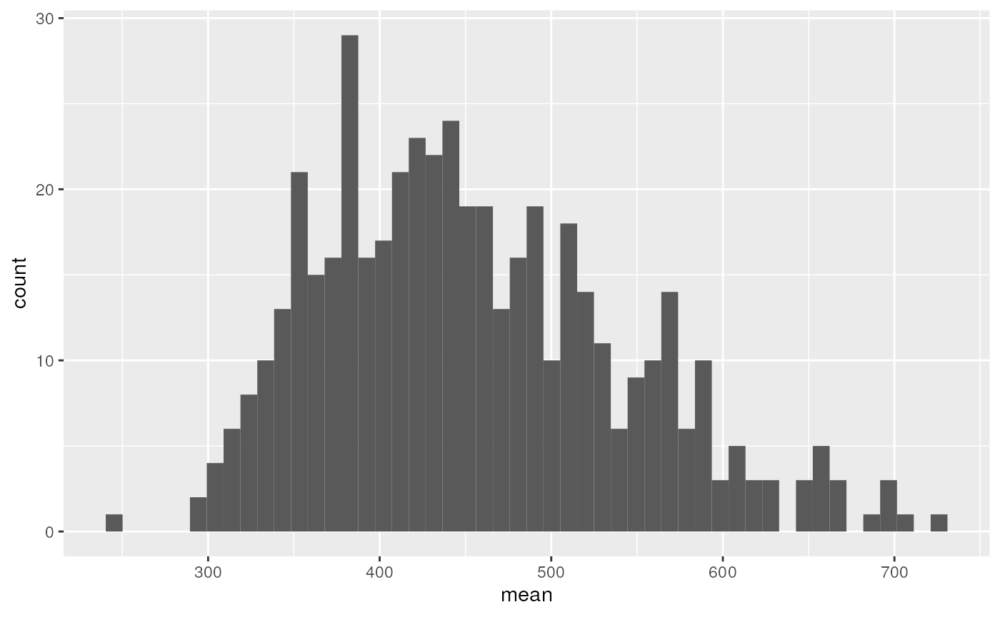
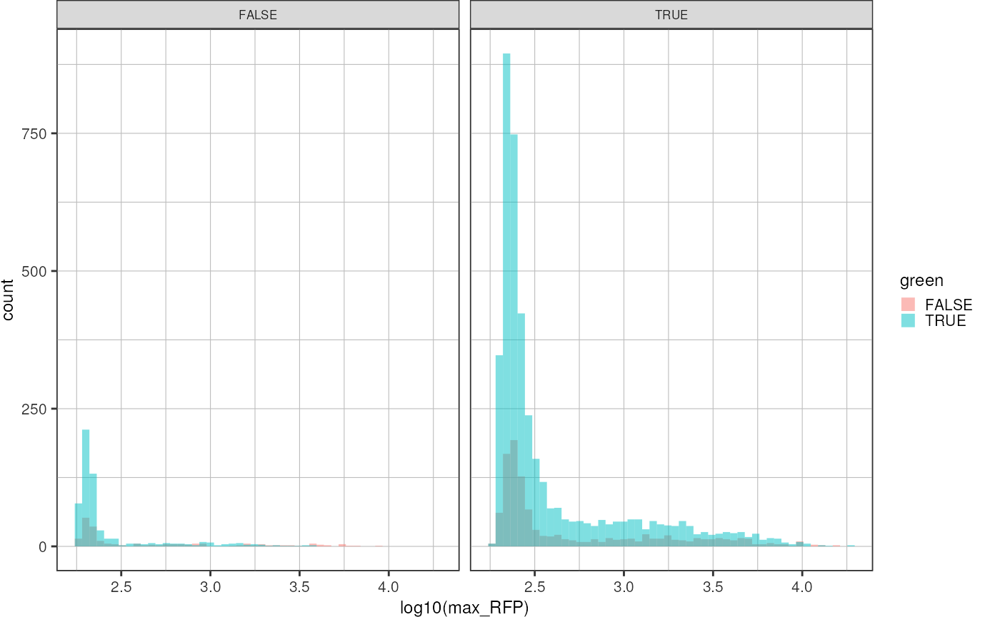
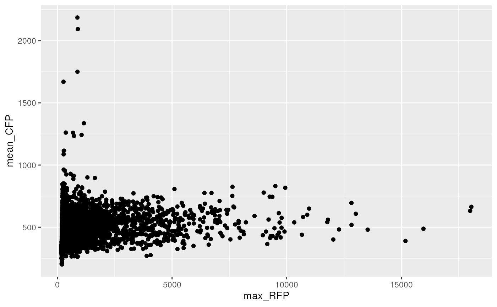
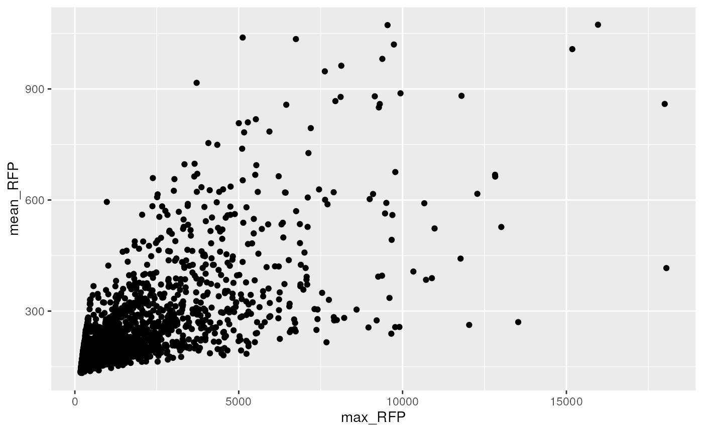

Droplet Image Analysis
droplet_image_analysis.RmdCombine all the available data:
Find the files:
replaceChannel <- function(channelNr) {
if (channelNr == 1) {
return("BF")
} else if (channelNr == 2) {
return("RFP")
} else if (channelNr == 3) {
return("CFP")
} else if (channelNr == 4) {
return("GFP")
} else {
return(NA)
}
}
fnames <- list.files("data/droplet_image_analysis/20230125/", pattern = "*.csv", full.names = TRUE)
drops <- tibble::tibble()
for (f in fnames) {
d <- readr::read_csv(f,
col_names = c("label", "area", "mean", "sd", "min", "max", "perim", "feret", "channel", "feret_x", "feret_y", "feret_angle", "feret_min"), skip = 0,
show_col_types = FALSE) %>%
tidyr::separate_wider_delim(label, " - ", names = c("nd_file", NA, "roi_id", "series")) %>%
dplyr::mutate("series" = stringr::str_extract(series, "series \\d\\d"),
"channel" = sapply(channel, replaceChannel))
# format roi_id and assign incubation time
# ovenright + t:x/25 -> 2h + x min
if (startsWith(basename(f), "overnight_000.nd2")) {
# read incubation time from roi_io
d <- d %>%
tidyr::separate_wider_delim(roi_id, ":", names = c("roi_id", NA, NA, "incubation")) %>%
dplyr::mutate("incubation" = hms::hms(hours = 2, minutes = stringr::str_split(incubation, "/")[[1]][1] %>% as.numeric()*10))
} else if (startsWith(basename(f), "next_morning_.nd2")) {
d <- d %>%
tidyr::separate_wider_delim(roi_id, ":", names = c("roi_id", NA, NA)) %>%
dplyr::mutate("incubation" = hms::hms(hours = 10))
} else {
stop(paste("File prefix", basename(f), "not recognized"))
}
drops <- dplyr::bind_rows(drops, d)
stopifnot(ncol(drops) == 16)
}Investigate droplet shapes (therefore, only one channel is enough:
drops %>%
dplyr::filter(channel == "BF") %>%
ggplot(aes(x = area)) +
geom_histogram(bins = 30) +
theme_pretty()
drops <- drops %>%
# remove ROIs that are not spherical, i.e. whose min feret radius deviates too much from the max:
dplyr::filter(feret - feret_min < 1.5) %>%
# allow only droplets between 27-35 µm in diameter:
dplyr::filter(area > 575 & area < 962) %>%
# look only at 2h incubation
dplyr::filter(incubation < hms::hms(hours = 3))Plot distribution of mean intensities:
drops %>%
ggplot(aes(x = mean)) +
geom_histogram() +
facet_wrap(~ channel, scales = "free")
#> `stat_bin()` using `bins = 30`. Pick better value with `binwidth`.
It can be seen that CFP is not bimodal, as it should be…
drops %>%
ggplot(aes(x = sd)) +
geom_histogram() +
facet_wrap(~ channel, scales = "free")
#> `stat_bin()` using `bins = 30`. Pick better value with `binwidth`.


TODO:
- filter very dark bf rois (-> spacer beads)
Format
dwide <- drops %>%
dplyr::select(c(-perim, -feret_x, -feret_y, -feret_angle, -feret_min)) %>%
tidyr::pivot_wider(names_from = channel, values_from = c(mean, sd, min, max))
dwide
#> # A tibble: 5,982 × 22
#> nd_file roi_id series area feret incub…¹ mean_BF mean_…² mean_…³ mean_…⁴
#> <chr> <chr> <chr> <dbl> <dbl> <time> <dbl> <dbl> <dbl> <dbl>
#> 1 overnight_… ID 08… serie… 687. 30.3 02:10 27979. 136. 271. 5063.
#> 2 overnight_… ID 08… serie… 746. 31.7 02:10 28425. 138. 243. 698.
#> 3 overnight_… ID 07… serie… 815. 33.1 02:10 26027. 163. 273. 4468.
#> 4 overnight_… ID 03… serie… 882. 34.4 02:10 27168. 150. 331. 5889.
#> 5 overnight_… ID 00… serie… 746. 31.7 02:10 29070. 150. 376. 8862.
#> 6 overnight_… ID 07… serie… 631. 29.2 02:10 27732. 140. 326. 7097.
#> 7 overnight_… ID 08… serie… 687. 30.3 02:10 28408. 161. 354. 5980.
#> 8 overnight_… ID 07… serie… 815. 33.1 02:10 27030. 143. 337. 855.
#> 9 overnight_… ID 07… serie… 951. 35.6 02:10 28530. 184. 309. 5286.
#> 10 overnight_… ID 06… serie… 746. 31.7 02:10 27539. 158. 349. 856.
#> # … with 5,972 more rows, 12 more variables: sd_BF <dbl>, sd_RFP <dbl>,
#> # sd_CFP <dbl>, sd_GFP <dbl>, min_BF <dbl>, min_RFP <dbl>, min_CFP <dbl>,
#> # min_GFP <dbl>, max_BF <dbl>, max_RFP <dbl>, max_CFP <dbl>, max_GFP <dbl>,
#> # and abbreviated variable names ¹incubation, ²mean_RFP, ³mean_CFP, ⁴mean_GFPThreshold green at intensity of 5000 and blue at intensity of :
dwide <-dwide %>%
dplyr::mutate("green" = ifelse(mean_GFP > 5000, TRUE, FALSE),
"blue" = ifelse(mean_CFP > 375, TRUE, FALSE))
dwide %>%
ggplot(aes(x = log10(max_RFP), fill = green)) +
geom_histogram(bins = 50, position = "identity", alpha = 0.5) +
theme_pretty() +
facet_wrap(~blue)
Calculate average red signal in GREEN vs. EMPTY droplets:
dwide %>%
dplyr::group_by(green) %>%
dplyr::summarise("mean_rfp" = mean(max_RFP))
#> # A tibble: 2 × 2
#> green mean_rfp
#> <lgl> <dbl>
#> 1 FALSE 1069.
#> 2 TRUE 691.Plot green mean intensity vs red mean intensity
dwide %>%
ggplot(aes(x = max_RFP, y = mean_CFP)) +
geom_point()
dwide %>%
ggplot(aes(x= max_RFP, y = mean_RFP)) +
geom_point()